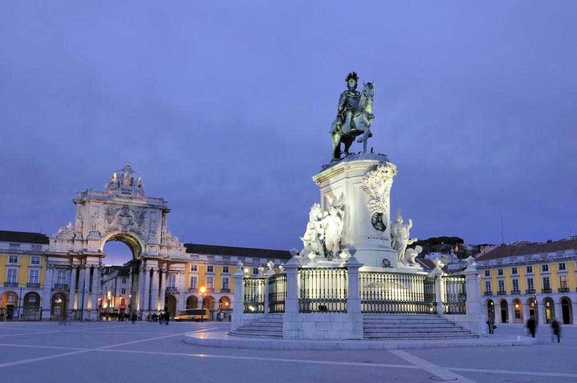

Моя країна - Португалія

Назва - Португалія
Португалія (порт. Portugal, МФА: [puɾ.tu.ˈgaɫ][1]) — скорочена офіційна назва країни. Походить від римського міста Порт-Кале (лат. Portus Cale), сучасного Порту, що в IX столітті стало центром Порткалеського (Португальського) графства. Португальська Республіка (порт. República Portuguesa, МФА: [ʁɨ.ˈpu.bɫi.kɐ puɾ.tu.ˈge.zɐ][2]) — офіційна назва країни згідно з чинною Конституції 1976 року. Вживається після революції 1910 року. Також — Республіка Португалія. Королівство Португалія — офіційна назва у 1139—1910 роках. Лузітанія — популярна поетична назва країни, оспівана в національній епопеї «Лузіади». Походить від однойменної римської провінції, розташованої в Центральній Португалії. У ранньомодерну добу виводилася від міфічного героя Луза.